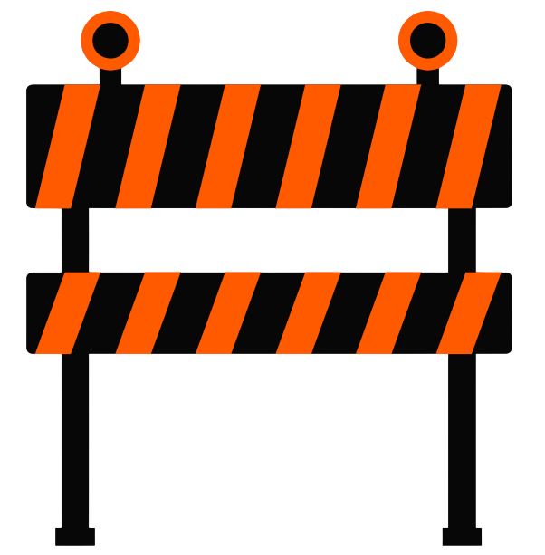

Ocorrências Ativas
Serviços de Trânsito
consulte o tráfego, acidentes e obras da cidade de Apodi-RN
Registrar Ocorrência
registre aqui acidentes, obras, congestionamentos de tráfego e etc.
Status do Tráfego
status de ocorrências ativas e finalizadas
Perfil
acesse seus dados
Configurações
acessibilidade e exclusão de conta